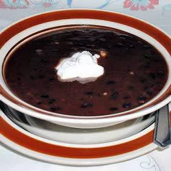

Tuscan Vegetable Minestrone

Description
This is a recipe from a cookbook by Dr. Dean Ornish
Ingredients
- 2 cups diced green cabbage
- 1/2 cup diced onion
- 1/2 cup diced carrots
- 1/2 cup diced celery
- 1/2 cup diced peeled baking potato
- 1 cup canned ground tomatoes
- 5 cups vegetable broth
- 1/2 cups diced zucchini
- 1 (15oz) can kidney beans
- 1/4 cup diced elbow macaroni
- 1 tablespoon minced fresh oregano
- Salt and pepper
Directions
- In a large pot, combine cabbage, onion, carrots, celery, potato, tomatoes, and vegetable broth.
- Bring to a simmer over moderate heat.
- Cover, adjust heat to maintain a simmer, and cook until vegetables are half done, about 15 minutes.
- Add zucchini, beans with their juice, and macaroni.
- Cover and simmer until vegetables are tender and pasta is al dente, about 15 minutes.
- Add oregano. Season to taste with salt and pepper.